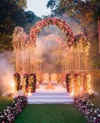

From pastel palettes to heritage embroidery, 2025 is full of stunning bridal trends. Here are ten styles brides are loving—plus tips to match your venue, season, and comfort.
Top 10 Styles
- Pastel lehengas: dusty rose, pistachio, and powder blue with silver zardozi.
- Metallic embroidery: mirror work, sequins, and subtle sparkle for evening pheras/receptions.
- Velvet elegance: deep maroons, emeralds, and plum for winter weddings.
- Celebrity-inspired: classic reds with minimal blouses; long veils/odhanis.
- Floral prints: breezy organza for mehendi and day functions.
- Cape dupattas: modern silhouettes for sangeet/cocktail.
- Heritage craft: gota patti, bandhej, and leheriya from Rajasthan.
- Monotone looks: head-to-toe single hue with layered textures.
- Sustainable picks: handwoven silks and up-cycled embroideries.
- Detachable elements: skirts/dupatta add-ons to restyle post-wedding.
How to Choose Your Lehenga
- Season: organza/chiffon for summers; velvet/silk for winters.
- Venue: pastel + silver for lawns; deep hues + gold for palaces/banquets.
- Comfort: light can-can, breathable lining, easy dupatta drape.
Styling: pair polki/kundan with pastels; temple jewelry with reds; pearls with monotones.
Need outfit + décor color matching? We create mood boards that blend your lehenga palette with stage florals and lighting. Ask for a free consult →
Rajdhani Events
RTH